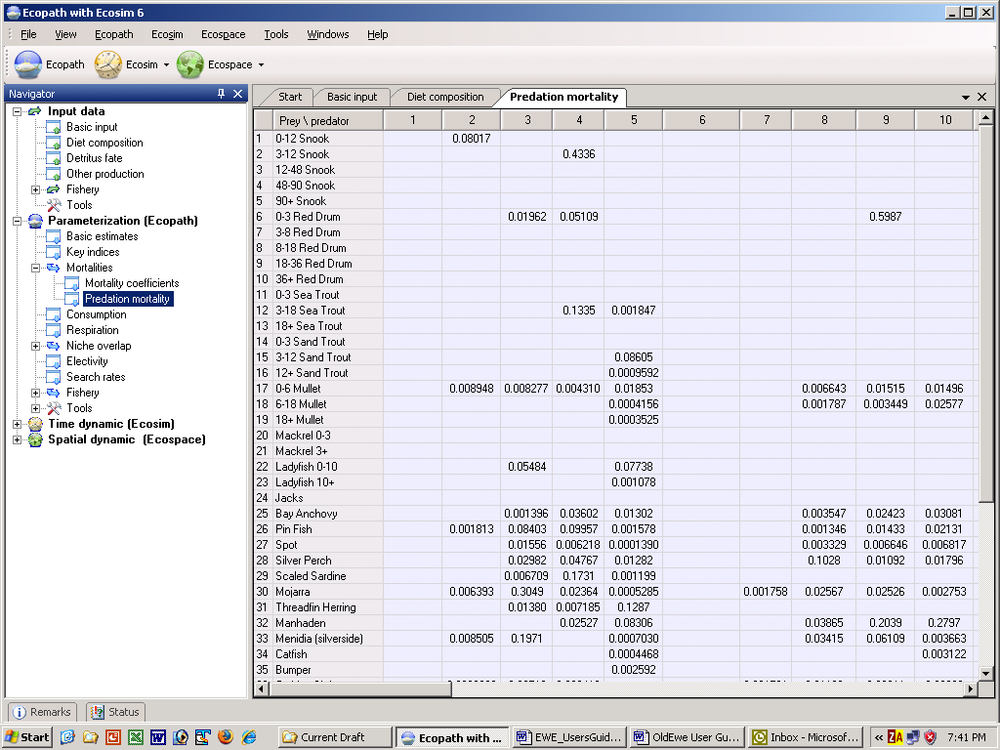

The Predation mortality form (Figure 7.2) is very important and should be checked frequently when balancing a model.
To begin with, the Mortality coefficients form will guide you to particular mortality coefficients that are causing problems with balancing. If predation mortality is too high then the Predation mortality form will help you identify which predators are causing the problem for a particular prey group.
To help you identify possible problem predators, cells with unusually high predation mortalities will be shown with a different-coloured background instead of the usual blue background. Note that this is intended as a guide only to show which predators are contributing most to a prey species’ mortality. You should use the literature, expert opinion and your understanding of the ecosystem to decide which predation mortalities should be changed and by how much.

Figure 7.2. Predation mortality form showing the quantitatively important predators and prey for all groups. This screen can be used to great advantage when balancing a model with one or several values of EE>1, to identify the consumers (in columns) exerting the strongest pressure on the group(s) (in rows) with excessively high EE values.